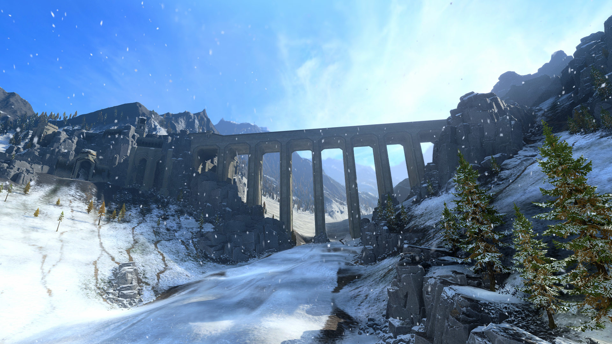

01 / TURN LOOP回合怎么过
战锤 3 的一回合，可以很快，也可以很慢。新手期建议每回合花 3–5 分钟，按固定顺序过一遍；熟练之后再压缩。
先读开局报告
左上角的事件、任务、外交请求、终局倒计时，先全部看一遍。很多任务会给免费单位、金钱或强力增益，别直接关掉。
收钱，建设，招募
先看金币和收入明细，再决定建筑队列。建筑优先补“增长、经济、补员、防御”，兵营只放在军事行省。招募尽量在回合开始就排队，别等到要打仗才发现没兵。
移动军队，先侦察再进攻
用英雄或轻骑开视野，确认敌方军队位置和援军范围。移动前想好“打完站哪、下回合会不会被反打”。不要为了多走两步把军队送进敌方三支部队的包围圈。
英雄行动
刺客、法师、工程师大都有地图行动：暗杀、致伤、阻断军队、偷科技、拆墙。每回合看一眼有没有高价值目标，尤其是敌方领主和攻城前的城墙。
外交
能签贸易就签，能签互不侵犯就签，远征前要军事通行权。看一圈谁在打仗、谁快灭了，提前站队或趁火打劫。不要随便加入盟友的战争。
战前检查
手动存档。看军队补员、弹药、体力、援军距离和地形。攻城前确认有没有攻城器械或拆墙手段。关键战之前，把法师的法术、领主的技能和物品都检查一遍。
结束回合，处理反应
AI 回合结束后，先看有没有敌人进入你的领土、有没有新的外交请求、有没有叛乱或腐蚀事件。被围城时，优先判断“守得住还是突围”，不要干等。
把每回合最贵的一件事放在最前面做：通常是打一场关键战或决定下一个扩张方向。剩下的事情都是围绕它服务。
02 / INTERFACE界面解剖：七个区域
下面是一张示意化的战役界面。真实界面会因派系和分辨率略有不同，但信息分区是一致的。
示意图，不是游戏截图。真实界面会因派系、分辨率与 Mod 不同。
① 顶部资源栏。金币、每回合收入、增长、控制力、腐蚀、回合数。点金币看收支明细；点增长看行省等级进度；点腐蚀看来源。
② 任务与事件。主线任务、派系任务、终局倒计时、外交请求都在这里。任务奖励经常是免费单位、金钱或永久增益，别忽略。
③ 行省面板。选中定居点后出现。看增长、控制力、收入、建筑槽、驻军和戒律。首府和小城的面板略有不同。
④ 定居点。旗帜颜色代表归属；城墙图标代表有城防；气候图标告诉你适不适合占领。
⑤ 军队。盾牌数字是兵力 / 槽位；脚下的箭头是移动路径；右键移动，左键选择。移动前把鼠标悬停在目标上，会显示预计战斗结果与援军。
⑥ 外交与派系机制。左下角通常有外交、任务、派系专属机制（例如震旦的阴阳、基斯里夫的支持者）。每回合至少扫一眼。
⑦ 结束回合。结束前确认没有空建筑槽、没有未使用的招募、没有能签的条约。按空格可以暂停查看地图。
提示：不同派系的专属机制按钮位置不同，但“资源、行省、军队、外交、回合”这五块永远存在。
03 / CAMPAIGN MODES三种战役，到底玩哪个
它们不是难度选项，而是三种完全不同的目标结构。先选对模式，比选对派系还重要。
| 模式 | 目标 | 时长 | 适合 | 要注意 |
|---|---|---|---|---|
| 序章 · 失落之神 | 跟着剧情打完一段小战役 | 2–4 小时 | 第一次接触全战 / 战锤 | 教学性质强，不要用它的难度判断整款游戏 |
| 混沌魔域 | 进四神领域收集灵魂，最终决战 | 20–40 小时 | 想看剧情、喜欢线性目标 | 裂隙会周期性开启，其他派系也在抢灵魂 |
| 超凡帝国 | 自己定目标，沙盒扩张 | 100+ 小时 | 熟悉基础后长期游玩 | 没有引导，容易不知道下一步干嘛 |
序章：最好的教程，但不代表全部
序章跟随一位基斯里夫王子，从守城打到混沌荒原，最后解锁恶魔亲王。它会教你移动、战斗、招募、建筑、法术和基础外交，而且演出质量很高。第一次进游戏，先打完序章。
- 序章的部队和建筑是简化过的，不要把它当成完整战役的平衡。
- 打完序章会解锁恶魔亲王派系（Daemons of Chaos），在超凡帝国里可以自定义身体部件。
- 如果你已经玩过全战，序章可以跳过；但战锤 3 的裂隙、法术和攻城机制值得过一遍。
混沌魔域：有明确终点的剧情战役
混沌魔域的核心循环是：等裂隙开启 → 派军队进入四神领域 → 完成领域目标、拿到灵魂 → 关闭裂隙、回来守家 → 集齐灵魂进最终战。每个领域都有自己的机制和生存战，不是单纯的“打一整张地图”。
- 裂隙不是福利，是计时器。裂隙会提高腐蚀、刷出混沌军队，还会让其他派系抢先拿灵魂。每次开启都优先处理。
- 不要四个领域同时推进。你的主力只有一支，进领域期间本土会被偷。留一支守军，或者和邻居签互不侵犯。
- 生存战很耗时间。一场可能 40–60 分钟，中途不能存档。开打前留出时间，别在深夜硬打。
- 灵魂不是唯一胜利方式。如果你不想抢，也可以走征服路线，但会更慢。
超凡帝国：没有剧本，只有你自己定的目标
超凡帝国把三部曲的地图拼成一个巨型沙盒。你有 25 个种族、100+ 传奇领主、几百个定居点，但游戏不会告诉你“现在该打谁”。所以你需要自己定一个短期目标和长期目标。
- 短期目标：统一起始行省、拿到第一个完整行省、凑出第一支满编。
- 中期目标：消灭一个烦人的邻居、拿到一个关键资源 / 港口、和两个邻居签互不侵犯。
- 长期目标：完成派系的短期胜利条件，或者单纯把某个区域涂成你的颜色。
- 终局场景：9.0 后可以在开局设置里调整或关闭。第一次玩建议关闭或延后，先学会走路。
第一局超凡帝国，只设定一个“必须完成”的目标，例如“统一起始行省并活到 50 回合”。完成之后，再决定要不要继续。不要一上来就想着“统一全世界”。
04 / ECONOMY经济：钱从哪来，花到哪去
战锤 3 的经济不复杂，但很容易被忽略。记住一个公式：净收入 = 建筑收入 + 贸易 + 掠夺 − 军队维护 − 建筑维护。点顶部金币，所有明细都在里面。
先算三笔账
现金储备
至少留 2–3 回合的军队维护费。突然被宣战、需要紧急招募或补员时，这笔钱能救你一命。
每回合净收入
正数不代表安全。看它够不够支撑下一支军队、下一轮建筑升级。长期低于 +300 就要警惕。
投资回报
建筑花 3000、每回合多 200，回本要 15 回合。前期优先建回本快的经济 / 增长建筑。
建筑优先级：先增长，再收入，最后军事
大多数派系的首府建筑链会同时给增长和收入。小城则要取舍：经济建筑给钱，增长建筑爬等级，兵营解锁单位，防御建筑给驻军。一个行省不需要什么都有。
- 首府：优先升级主城（解锁建筑槽和更高等级），再补增长 / 收入 / 特色建筑。
- 经济小城：经济建筑 + 增长建筑。不要造兵营。
- 军事行省：选一个靠近前线的行省，集中造兵营、招募建筑和补员建筑。
- 前线小城：防御建筑 + 补员。它可能经常被围，驻军能拖到援军来。
军队维护与补给线
每支军队、每个单位每回合都要付维护费。战锤 3 还有“补给线”：每多一支军队，所有军队的维护费会上涨。高难度下大约是每支额外军队 +4%，低难度约 +1%～2%（以游戏内难度说明为准）。
收入不够时，不要靠裁掉经济建筑来养更多兵。正确顺序是：先裁掉最贵的精锐 / 多余军队 → 补经济建筑 → 再扩军。负收入滚几回合，你会被迫解散军队，前线直接崩。
贸易、掠夺与洗劫
贸易是前期最划算的额外收入：签一个贸易协定，可能多养半支军队。沿海派系还可以靠港口和海上贸易。掠夺和洗劫则是“以战养战”：打不过就抢，抢完就走，不要为了守一块烂地把自己拖死。
- 贸易：优先和同阵营、关系好、路线安全的派系签。贸易路线会被战争切断。
- 洗劫：拿到现金并破坏敌方经济，但城还是敌人的。适合打不下来的前线城市。
- 毁灭：把城拆掉，适合气候恶劣、守不住、又不想留给敌人的地方。
- 占领：只有你打算长期经营、且守得住时才占。
05 / PROVINCES行省：增长、控制力与腐蚀
行省是你的基本盘。一个行省通常由一座首府和 2–4 座小城组成。统一整个行省后，才能开戒律、吃完整的行省加成。
增长：一切建筑的母亲
增长决定定居点什么时候升级。升级带来建筑槽、更高等级的建筑和更强的驻军。前期增长比收入更重要：早 10 回合升到 T4，比多赚 500 块强得多。
- 首府主城建筑通常给增长；小城可以补增长建筑。
- 戒律、领主技能、英雄、科技和部分资源都能加增长。
- 增长有“盈余”概念：超过升级阈值的部分会转化为额外收益。别让增长长期溢出。
控制力：不要让它掉到 -100
战锤 3 用“控制力”取代了公共秩序。控制力每回合变化，跌到 -100 会爆发叛乱。低控制力还会降低收入和增长。新占领的城、腐蚀高的地方、被劫掠的行省最容易出问题。
- 驻军：把军队停在城里，能加控制力并镇压叛乱。
- 建筑：控制力建筑、净化建筑、城墙都能帮忙。
- 英雄：部分英雄有加控制力 / 减腐蚀的行动或光环。
- 戒律：完整控制行省后，可以开加控制力的戒律。
- 税：部分派系可以关掉行省税来换控制力，叛乱边缘时很实用。
腐蚀：不是“清零”，是“压住”
腐蚀分为混沌、吸血鬼、鼠人等类型。高腐蚀会降低控制力、造成军队减员，并可能刷出对应势力的叛乱军。秩序阵营需要靠净化建筑、英雄、戒律和科技把腐蚀压下去；混沌 / 亡灵派系则相反，腐蚀是他们的增益。
刚占领的城市通常有占领惩罚、腐蚀和控制力问题。先驻军 + 建控制力 / 净化建筑，不要立刻把它当经济城。如果实在压不住，洗劫或毁灭比硬守更划算。
气候：不是所有地都值得占
每个种族对气候有不同适应度：适宜、不适、恶劣。不适宜气候会降低增长、收入、补员，增加建设成本。占领前先看气候图标，尤其是跨区域扩张时。
建筑模板：一个行省该造什么
| 定居点类型 | 优先建筑 | 不要造 | 目标 |
|---|---|---|---|
| 首府（核心） | 主城升级、增长、收入、特色建筑 | 低价值兵营 | 尽快升 T4/T5，吃满行省加成 |
| 经济小城 | 收入、增长、资源 / 港口 | 兵营、重复防御 | 稳定养军队 |
| 军事行省 | 兵营、招募容量、补员、兵种加成 | 过多经济建筑 | 一个行省供应全军 |
| 前线小城 | 防御、驻军、补员、控制力 | 昂贵经济建筑 | 拖住敌人，等援军 |
| 烂地 / 飞地 | 最低限度防御或直接放弃 | 大量投资 | 不拖累主线 |
具体建筑链因种族而异；原则是“一个行省只做一件事”。
戒律与行省法令
完整控制一个行省后，可以开戒律。常见选项：加增长、加控制力、加收入、加招募容量、减腐蚀。戒律切换有冷却，不要每回合改。前线行省开防御 / 控制，后方开增长 / 收入。
06 / ARMIES军队：20 个槽位的艺术
一支军队最多 20 个槽位，包括领主和嵌入的英雄。所以“1 领主 + 19 单位”是满编；带 2 个英雄，就只剩 17 个战斗单位。

先分工，再填兵
新手最容易犯的错，是看到什么强就招什么，结果前排不够、远程没人保护、没有反大型。更稳的做法是先按“工作”分配槽位：
| 工作 | 建议槽位 | 作用 | 例子 |
|---|---|---|---|
| 扛线 | 5–7 | 挡住敌人，让远程输出 | 持盾步兵、长戟兵、重甲前排 |
| 输出 / 反大型 | 4–6 | 砍穿前排、处理巨兽和骑兵 | 大剑、长戟、巨兽、怪步 |
| 远程 | 3–5 | 集火、削士气、点杀关键单位 | 弓箭手、火枪、弩手 |
| 机动 | 3–5 | 包抄、背冲、追逃、保护远程 | 骑兵、战车、飞行单位 |
| 炮兵 / 巨兽 | 1–3 | 攻城、反巨兽、破阵 | 火炮、投石机、巨兽 |
| 英雄 | 1–3 | 法术、光环、斩将、补员 | 法师、工程师、战士英雄 |
这是一个通用模板，不是万能答案。面对重甲多带破甲，面对巨兽多带反大型，面对鼠人 / 绿皮多带范围伤害。
招募：地方招募 vs 全局招募
- 地方招募：在定居点或附近招募，便宜、快，但受当地兵营限制。
- 全局招募：在任意军队招募全国可用单位，贵、慢，适合前线救急或补关键兵种。
- 招募槽：每回合能招的数量有限。前期优先补满前排和远程，不要一口气全招精锐。
- 名将团（RoR）：每支军队有数量上限的精英单位，属性独特，适合关键战。不要平时就送掉。
补员：残编不要继续打
补员受领土、腐蚀、气候、补员建筑、英雄和姿态影响。己方领土、扎营、低腐蚀补得快；敌境、高腐蚀、恶劣气候补得慢。战斗后先看军队面板的补员率，再决定要不要推进。
军队姿态：什么时候用什么
| 姿态 | 用途 | 代价 / 风险 |
|---|---|---|
| 普通行军 | 日常移动、进攻 | 无额外风险 |
| 强行军 | 快速回防、追击、抢城 | 移动力高但战斗力下降，不能主动攻击 / 设伏 |
| 扎营 | 补员、野外招募、防守 | 停止移动，可能被围 |
| 伏击 | 以少打多、埋伏援军 | 移动力低，可能被侦测 |
| 劫掠 | 以战养战、破坏敌方经济 | 降低敌方控制力，也暴露位置 |
| 地下通道 / 传送 | 穿越山脉、绕过隘口 | 可能遭遇地下伏击，部分派系专属 |
前期：6 前排 + 4 远程 + 2 机动 + 1 攻城 / 巨兽 + 领主。中后期再根据对手替换成破甲、反大型、炮兵和更多英雄。不要为了“看起来强”全带巨兽，巨兽会被长戟兵和集火教做人。
07 / DIPLOMACY外交：不花钱的军队
战锤 3 的外交比前两代好用得多。你不需要当外交家，但每回合花两分钟，能省下一条战线、半支军队，甚至一座城。
先看“可靠性”
可靠性是你对所有派系的信用评分。毁约、背刺、撕毁条约都会降低它。可靠性低，AI 会更难相信你，贸易、同盟、合邦都会变贵。新手最容易犯的错，是随便加入盟友的战争，然后被拖进三线作战。
条约怎么选
| 条约 | 好处 | 风险 | 建议 |
|---|---|---|---|
| 贸易协定 | 每回合收入，提升关系 | 路线会被战争切断 | 能签就签，优先同阵营 |
| 互不侵犯 | 稳定边境，提升关系 | 对方仍可能在你弱时撕约 | 和不想打的邻居签 |
| 军事通行权 | 军队可穿过对方领土 | 可能被用来打你的盟友 | 远征前签 |
| 防御同盟 | 被攻击时盟友参战 | 盟友被攻击时你也会被拖入 | 只和“敌人离你很远”的派系签 |
| 军事同盟 | 协同作战、共享部分机制 | 更容易被拖入大战 | 中期再考虑，先看它的敌人 |
| 合邦 | 获得同族领主、城市、军队 | 花费高、可能掉关系 | 同族且关系好时优先 |
| 附庸 | 进贡、跟随参战、不用管理 | 附庸可能被攻击，拉你下水 | 不想管的烂地可以附庸 |
三个实用技巧
- 用“送地”换和平 / 条约。打下一块不想要的飞地，送给邻居换互不侵犯或贸易，比硬守划算。
- 加入战争要收钱。AI 请求你参战时，可以要求付款或条约作为交换。别免费当打手。
- 不要和“快死的派系”签军事同盟。它被灭时，你会继承它的敌人，还可能掉可靠性。
你签了一个防御同盟，盟友被一个强大派系宣战，你自动参战；你的主攻方向瞬间变成两线，后方被偷。签同盟前，先看它的邻国是谁、它最近在和谁打。
合邦与附庸
合邦是同一种族派系之间的和平吞并。通常需要高关系、巨额金钱，或者完成特定任务。合邦后你会继承它的领主、城市和军队，但也要接手它的战争和烂摊子。附庸则保留对方自治，适合不想亲自管理的远方领地。
08 / HEROES英雄与事务官
英雄可以单独在地图上行动，也可以嵌入军队。嵌入时占 1 个军队槽位，但提供法术、光环和战斗能力。用好英雄，等于多半个军队。
四类英雄
法术输出 / 辅助
提供吹息、直接伤害、治疗、召唤和光环。法师的站位比法术本身更重要：站在前排后面，别被骑兵摸到。
斩将 / 扛线
高攻防、高血量，适合缠住敌方领主、巨兽或关键单位。别让他一个人冲进人堆。
光环 / 补员 / buff
工程师、牧师、旗手等，提供军队-wide 增益、补员、弹药或抗性。嵌入军队价值最高。
地图行动 / 斩将
暗杀、致伤、破坏城墙、偷科技。 standalone 行动收益高，但被抓会损失。
地图行动：每回合值得看一眼
| 行动 | 效果 | 什么时候用 |
|---|---|---|
| 暗杀 / 致伤 | 直接移除敌方英雄或使其受伤 | 敌方有强力法师 / 工程师时 |
| 阻断军队 | 大幅降低敌方军队移动力 | 追不上、想拖住援军时 |
| 破坏城墙 | 降低攻城时城墙 / 塔楼强度 | 攻城前 1–2 回合 |
| 偷科技 | 获得科技点或加速研究 | 和平时期、科技落后时 |
| 袭击部队 | 造成减员、降低补员 | 消耗敌方主力，不接战 |
| 加控制力 / 减腐蚀 | 稳定新占省份 | 刚占领、腐蚀高的行省 |
容量与升级
英雄容量由建筑、科技和技能提供。不要急着招满，先保证每个主力军队有 1 个法师 + 1 个支援英雄。升级时，先点战役技能（移动力、补员、维护费、视野），再点军队增益，最后才点个人战斗。法师优先点法术和魔法之风相关技能。
把英雄单独放在后方“待命”，什么都不做。英雄要么嵌入主力，要么每回合执行地图行动，要么去新占省份加控制力。闲置的英雄等于浪费容量。
09 / PROGRESSION科技、技能与装备
战役的成长线很多：领主技能、科技、装备、追随者、军队能力。新手不需要全部精通，但要知道先点什么。
领主技能树：先蓝后红，最后黄
- 蓝线（战役）：移动力、补员、维护费、视野、招募容量。前期收益最高，优先点。
- 红线（军队）：给特定兵种加攻防、士气、弹药。中后期主力军队必点。
- 黄线（个人）：领主自己的攻防、血量、坐骑。想斩将或单挑时再点。
- 法术线：法师领主优先点法术和魔法之风，别把点浪费在近战上。
科技：先补短板，再堆强项
科技树通常分经济、军事、派系特色三块。前期优先点经济 / 增长 / 补员，中期点核心兵种的攻防，后期点终局应对（反大型、反步兵、魔法抗性）。不要平均点，选一条主线。
装备与追随者
- 装备：武器、护甲、护符、秘法物品、附魔物品。优先给主力领主和法师，注意装备槽限制。
- 追随者：提供被动增益，例如补员、收入、外交、腐蚀。可以在角色之间转移。
- 军队能力：部分派系有额外的军队技能，例如额外弹药、治疗、召唤。关键战前检查是否装备。
一个简单的优先级
移动力 > 补员 > 维护费 > 核心兵种攻防 > 个人战斗力。战役里，能多走一步、能快速回血，往往比多 5 点近攻更值钱。
10 / END GAME终局、胜利与“后期没事干”
战锤 3 的胜利条件分三层。你可以随时停，也可以继续涂色。9.0 之后，后期还多了终局场景和危机事件，专门用来打破“我已经无敌了”的无聊。
三层胜利条件
| 层级 | 通常要求 | 奖励 | 建议 |
|---|---|---|---|
| 短期胜利 | 控制核心区域、完成派系任务、击败指定敌人 | 派系 / 种族奖励 | 第一局的目标，完成后再决定是否继续 |
| 长期胜利 | 更大版图、关键城市、终局事件 | 更强的全局奖励 | 想完整体验派系时再追 |
| 支配胜利 | 消灭主要对手 / 控制大量地图 | 成就与满足感 | 纯 sandbox 目标，耗时长 |
9.0 更新了所有旧传奇领主的胜利条件，加入了更贴合设定的目标。开局先看胜利面板，知道自己要做什么。
9.0 的终局场景
| 终局 | 谁来了 | 核心机制 | 怎么打 |
|---|---|---|---|
| 混沌入侵 | 阿查恩统合混沌势力 | 阿查恩初期近乎无敌；摧毁五座关键要塞削弱他，再决战 | 先守要塞、拆堡垒，别在开阔地和他硬碰 |
| 鼠潮 | 斯卡文鼠人大起义 | 鼠人定居点全部可见；顶住波次，收集知识后反击 | 守隘口、用范围伤害和炮兵，别被数量拖垮 |
| 纳加什崛起 | 纳加什与死亡大君 | 黑色金字塔转移到纳迦什扎，亡灵大军推进 | 准备反亡灵 / 魔法抗性，优先拆金字塔 |
开局设置里可以调整终局的时间、强度和是否开启。第一次玩，建议关闭或延后；第二局再打开，体验真正的后期压力。
危机事件：不是终局，但也很烦
原本的终局事件被重新归类为中期危机，可能在你 60–100 回合时爆发。它们通常不会直接灭你，但会消耗你的预备队、打断扩张节奏。提前做三件事：留一支预备军、修好前线要塞、和后方邻居签互不侵犯。
逐步伤痕（Escalating Wounds）
9.0 新增的可选规则：领主在 10 回合内反复受伤，会叠加“新伤”负面，最高 3 级，恢复时间更长。它会让“拿领主无限送”的玩法失效。新手建议关闭；想增加压力时再开。
把所有军队派去打终局，后方空虚，被盟友背刺或叛乱偷家。终局期间，至少留一支能打的预备军，并确保关键要塞有驻军。你的帝国越大，后方越需要人守。
100 回合节奏：什么时候该做什么
| 阶段 | 大致回合 | 目标 | 关键动作 |
|---|---|---|---|
| 开局 | 1–30 | 统一 1–2 个行省 | 满编第一军、签贸易 / 互不侵犯、确定主攻方向 |
| 扩张 | 31–60 | 2–3 个行省，第二支军队 | 处理第一个危机、稳定腐蚀与控制力、开始合邦 / 附庸 |
| 破局 | 61–100 | 3–5 个行省，精英主力 | 替换高级兵、修前线要塞、准备终局场景 |
| 终局 | 100+ | 完成短期胜利 | 处理终局 / 危机、决定继续涂色还是收官 |
这不是硬性时间表。有的派系 60 回合已经破局，有的 100 回合还在挣扎；按自己的节奏来。
11 / CHECKLIST30 回合清单
勾选会自动保存在浏览器里。下次打开还在。建议第一局照着走一遍，第二局就可以按自己的节奏来。
开局前
每回合
第 1–10 回合
第 11–30 回合
大战前
战役是“怎么赢”，战斗是“怎么少死人”。下一章从战场界面、兵种克制、阵型、魔法到攻城，把每场战斗拆开讲。进入战斗篇 →